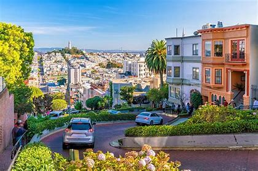
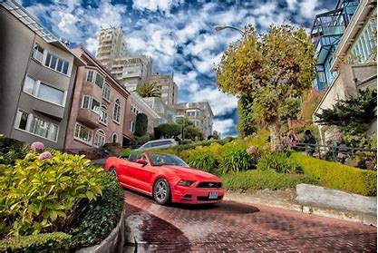

History
Lombard Street is one of San Francisco's most famous streets, known for its steep, one-block section with eight hairpin turns. This section of Lombard Street, between Hyde and Leavenworth Streets, was created in 1922 to reduce the hill's natural 27% grade, which was too steep for most vehicles. The result was a series of sharp curves that make Lombard Street the "crookedest street in the world."
Today, Lombard Street is a popular tourist attraction, with beautifully landscaped gardens and historic homes lining the curving road. The street is often crowded with visitors who come to admire its unique design and take photos of the iconic scene.
Visitor Information
- Location: Lombard Street, between Hyde and Leavenworth Streets, San Francisco, CA.
- Best Time to Visit: Early morning or late afternoon to avoid the crowds.
- Admission: Free to visit and view.
- Facilities: No restrooms available. Parking can be challenging in the area.
- Public Transportation: Easily reachable by bus, cable car, and Muni.
Lombard Street Gallery

